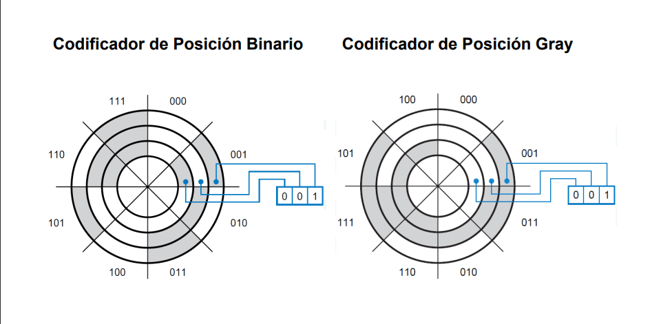

Que es el código Gray
El código Gray es un código
sin pesos y no aritmético; es
decir, no existen pesos para
las posiciones de los bits.
La caracteristica mas importante es
que entre un número y su adyacente solo varía un bit a la vez
Decimal
Binario
Gray
0
0000
0000
1
0001
0001
2
0010
0011
3
0011
0010
4
0100
0110
5
0101
0111
6
0110
0101
7
0111
0100
Aplicaciones de código Gray
El Código Gray se utiliza en encoders rotativos y
sensores de posición para proporcionar información
precisa sobre la posición angular o lineal de ejes,
ruedas, discos codificados, etc. Su característica
de cambiar solo un dígito entre combinaciones sucesivas
ayuda a evitar errores y garantiza una transición suave
en la lectura de la posición
